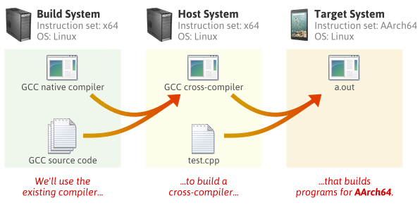

Compilation and Bootstrapping
Embedded & Operating Systems 8
Introductie
Where to start?
- BIOS / UEFI
- Firmware (EEPROM)
- Power-On Self-Test
- Boot-disk, MBR en boot-sector
De boot-sector

2nd-stage bootloader

Compilation vs intepretation

Compilation

Compilation
- GCC, LLVM+Clang
- Platform en CPU-specifiek
- Snelle executie
- Langzamere development
- Verspreiding (doorgaans) als binary
Linking
- Eén object-file per source bestand
- Compiler niet bewust van externe subroutines
- Linker combineert tot een geheel
- Static vs Dynamic linking
Makefiles
ELF Binaries
ELF Header:
Magic: 7f 45 4c 46 02 01 01 00 00 00 00 00 00 00 00 00
Class: ELF64
Data: 2's complement, little endian
Version: 1 (current)
OS/ABI: UNIX - System V
ABI Version: 0
Type: EXEC (Executable file)
Machine: Advanced Micro Devices X86-64
Version: 0x1
Entry point address: 0x400510
Start of program headers: 64 (bytes into file)
Start of section headers: 8232 (bytes into file)
Flags: 0x0
Size of this header: 64 (bytes)
Size of program headers: 56 (bytes)
Number of program headers: 10
Size of section headers: 64 (bytes)
Number of section headers: 33
Section header string table index: 32
Section Headers:
[Nr] Name Type Address Offset
Size EntSize Flags Link Info Align
[ 0] NULL 0000000000000000 00000000
0000000000000000 0000000000000000 0 0 0
[ 1] .interp PROGBITS 0000000000400270 00000270
0000000000000054 0000000000000000 A 0 0 1
[ 2] .note.ABI-tag NOTE 00000000004002c4 000002c4
0000000000000020 0000000000000000 A 0 0 4
[ 3] .hash HASH 00000000004002e8 000002e8
0000000000000024 0000000000000004 A 4 0 8
[ 4] .dynsym DYNSYM 0000000000400310 00000310
0000000000000060 0000000000000018 A 5 1 8
[ 5] .dynstr STRTAB 0000000000400370 00000370
00000000000000e1 0000000000000000 A 0 0 1
[ 6] .gnu.version VERSYM 0000000000400452 00000452
0000000000000008 0000000000000002 A 4 0 2
[ 7] .gnu.version_r VERNEED 0000000000400460 00000460
0000000000000020 0000000000000000 A 5 1 8
[ 8] .rela.dyn RELA 0000000000400480 00000480
0000000000000048 0000000000000018 A 4 0 8
[ 9] .init PROGBITS 00000000004004c8 000004c8
0000000000000017 0000000000000000 AX 0 0 4
[10] .plt PROGBITS 00000000004004e0 000004e0
0000000000000010 0000000000000010 AX 0 0 16
[11] .plt.got PROGBITS 00000000004004f0 000004f0
0000000000000008 0000000000000000 AX 0 0 8
[12] .text PROGBITS 0000000000400500 00000500
0000000000000172 0000000000000000 AX 0 0 16
[13] .fini PROGBITS 0000000000400674 00000674
0000000000000009 0000000000000000 AX 0 0 4
[14] .rodata PROGBITS 0000000000400680 00000680
0000000000000015 0000000000000000 A 0 0 4
[15] .eh_frame_hdr PROGBITS 0000000000400698 00000698
0000000000000044 0000000000000000 A 0 0 4
[16] .eh_frame PROGBITS 00000000004006e0 000006e0
000000000000011c 0000000000000000 A 0 0 8
[17] .init_array INIT_ARRAY 0000000000600dc0 00000dc0
0000000000000008 0000000000000008 WA 0 0 8
[18] .fini_array FINI_ARRAY 0000000000600dc8 00000dc8
0000000000000008 0000000000000008 WA 0 0 8
[19] .dynamic DYNAMIC 0000000000600dd0 00000dd0
0000000000000200 0000000000000010 WA 5 0 8
[20] .got PROGBITS 0000000000600fd0 00000fd0
0000000000000030 0000000000000008 WA 0 0 8
[21] .data PROGBITS 0000000000601000 00001000
0000000000000010 0000000000000000 WA 0 0 8
[22] .bss NOBITS 0000000000601010 00001010
0000000000000008 0000000000000000 WA 0 0 1
[23] .comment PROGBITS 0000000000000000 00001010
0000000000000022 0000000000000001 MS 0 0 1
[24] .debug_aranges PROGBITS 0000000000000000 00001040
00000000000000d0 0000000000000000 0 0 16
[25] .debug_info PROGBITS 0000000000000000 00001110
0000000000000184 0000000000000000 0 0 1
[26] .debug_abbrev PROGBITS 0000000000000000 00001294
0000000000000076 0000000000000000 0 0 1
[27] .debug_line PROGBITS 0000000000000000 0000130a
000000000000014a 0000000000000000 0 0 1
[28] .debug_str PROGBITS 0000000000000000 00001454
000000000000013c 0000000000000001 MS 0 0 1
[29] .debug_ranges PROGBITS 0000000000000000 00001590
0000000000000080 0000000000000000 0 0 16
[30] .symtab SYMTAB 0000000000000000 00001610
0000000000000648 0000000000000018 31 49 8
[31] .strtab STRTAB 0000000000000000 00001c58
000000000000029e 0000000000000000 0 0 1
[32] .shstrtab STRTAB 0000000000000000 00001ef6
0000000000000130 0000000000000000 0 0 1
Key to Flags:
W (write), A (alloc), X (execute), M (merge), S (strings), I (info),
L (link order), O (extra OS processing required), G (group), T (TLS),
C (comnotessed), x (unknown), o (OS specific), E (exclude),
l (large), p (processor specific)
There are no section groups in this file.
Program Headers:
Type Offset VirtAddr PhysAddr
FileSiz MemSiz Flags Align
PHDR 0x0000000000000040 0x0000000000400040 0x0000000000400040
0x0000000000000230 0x0000000000000230 R E 0x8
INTERP 0x0000000000000270 0x0000000000400270 0x0000000000400270
0x0000000000000054 0x0000000000000054 R 0x1
[Requesting program interpreter: /nix/store/hwwqshlmazzjzj7yhrkyjydxamvvkfd3-glibc-2.26-131/lib/ld-linux-x86-64.so.2]
LOAD 0x0000000000000000 0x0000000000400000 0x0000000000400000
0x00000000000007fc 0x00000000000007fc R E 0x200000
LOAD 0x0000000000000dc0 0x0000000000600dc0 0x0000000000600dc0
0x0000000000000250 0x0000000000000258 RW 0x200000
DYNAMIC 0x0000000000000dd0 0x0000000000600dd0 0x0000000000600dd0
0x0000000000000200 0x0000000000000200 RW 0x8
NOTE 0x00000000000002c4 0x00000000004002c4 0x00000000004002c4
0x0000000000000020 0x0000000000000020 R 0x4
GNU_EH_FRAME 0x0000000000000698 0x0000000000400698 0x0000000000400698
0x0000000000000044 0x0000000000000044 R 0x4
GNU_STACK 0x0000000000000000 0x0000000000000000 0x0000000000000000
0x0000000000000000 0x0000000000000000 RW 0x10
GNU_RELRO 0x0000000000000dc0 0x0000000000600dc0 0x0000000000600dc0
0x0000000000000240 0x0000000000000240 R 0x1
PAX_FLAGS 0x0000000000000000 0x0000000000000000 0x0000000000000000
0x0000000000000000 0x0000000000000000 0x8
Section to Segment mapping:
Segment Sections...
00
01 .interp
02 .interp .note.ABI-tag .hash .dynsym .dynstr .gnu.version .gnu.version_r .rela.dyn .init .plt .plt.got .text .fini .rodata .eh_frame_hdr .eh_frame
03 .init_array .fini_array .dynamic .got .data .bss
04 .dynamic
05 .note.ABI-tag
06 .eh_frame_hdr
07
08 .init_array .fini_array .dynamic .got
09
Dynamic section at offset 0xdd0 contains 27 entries:
Tag Type Name/Value
0x0000000000000001 (NEEDED) Shared library: [libstdc++.so.6]
0x0000000000000001 (NEEDED) Shared library: [libm.so.6]
0x0000000000000001 (NEEDED) Shared library: [libgcc_s.so.1]
0x0000000000000001 (NEEDED) Shared library: [libc.so.6]
0x000000000000001d (RUNPATH) Library runpath: [/nix/store/hwwqshlmazzjzj7yhrkyjydxamvvkfd3-glibc-2.26-131/lib:/nix/store/12zhmzzhrwszdc8q3fwgifpwjkwi3mzc-gcc-7.3.0-lib/lib]
0x000000000000000c (INIT) 0x4004c8
0x000000000000000d (FINI) 0x400674
0x0000000000000019 (INIT_ARRAY) 0x600dc0
0x000000000000001b (INIT_ARRAYSZ) 8 (bytes)
0x000000000000001a (FINI_ARRAY) 0x600dc8
0x000000000000001c (FINI_ARRAYSZ) 8 (bytes)
0x0000000000000004 (HASH) 0x4002e8
0x0000000000000005 (STRTAB) 0x400370
0x0000000000000006 (SYMTAB) 0x400310
0x000000000000000a (STRSZ) 225 (bytes)
0x000000000000000b (SYMENT) 24 (bytes)
0x0000000000000015 (DEBUG) 0x0
0x0000000000000003 (PLTGOT) 0x600fd0
0x0000000000000007 (RELA) 0x400480
0x0000000000000008 (RELASZ) 72 (bytes)
0x0000000000000009 (RELAENT) 24 (bytes)
0x000000000000001e (FLAGS) BIND_NOW
0x000000006ffffffb (FLAGS_1) Flags: NOW
0x000000006ffffffe (VERNEED) 0x400460
0x000000006fffffff (VERNEEDNUM) 1
0x000000006ffffff0 (VERSYM) 0x400452
0x0000000000000000 (NULL) 0x0
Relocation section '.rela.dyn' at offset 0x480 contains 3 entries:
Offset Info Type Sym. Value Sym. Name + Addend
000000600fe8 000100000006 R_X86_64_GLOB_DAT 0000000000000000 puts@GLIBC_2.2.5 + 0
000000600ff0 000200000006 R_X86_64_GLOB_DAT 0000000000000000 __libc_start_main@GLIBC_2.2.5 + 0
000000600ff8 000300000006 R_X86_64_GLOB_DAT 0000000000000000 __gmon_start__ + 0
The decoding of unwind sections for machine type Advanced Micro Devices X86-64 is not currently supported.
Symbol table '.dynsym' contains 4 entries:
Num: Value Size Type Bind Vis Ndx Name
0: 0000000000000000 0 NOTYPE LOCAL DEFAULT UND
1: 0000000000000000 0 FUNC GLOBAL DEFAULT UND puts@GLIBC_2.2.5 (2)
2: 0000000000000000 0 FUNC GLOBAL DEFAULT UND __libc_start_main@GLIBC_2.2.5 (2)
3: 0000000000000000 0 NOTYPE WEAK DEFAULT UND __gmon_start__
Symbol table '.symtab' contains 67 entries:
Num: Value Size Type Bind Vis Ndx Name
0: 0000000000000000 0 NOTYPE LOCAL DEFAULT UND
1: 0000000000400270 0 SECTION LOCAL DEFAULT 1
2: 00000000004002c4 0 SECTION LOCAL DEFAULT 2
3: 00000000004002e8 0 SECTION LOCAL DEFAULT 3
4: 0000000000400310 0 SECTION LOCAL DEFAULT 4
5: 0000000000400370 0 SECTION LOCAL DEFAULT 5
6: 0000000000400452 0 SECTION LOCAL DEFAULT 6
7: 0000000000400460 0 SECTION LOCAL DEFAULT 7
8: 0000000000400480 0 SECTION LOCAL DEFAULT 8
9: 00000000004004c8 0 SECTION LOCAL DEFAULT 9
10: 00000000004004e0 0 SECTION LOCAL DEFAULT 10
11: 00000000004004f0 0 SECTION LOCAL DEFAULT 11
12: 0000000000400500 0 SECTION LOCAL DEFAULT 12
13: 0000000000400674 0 SECTION LOCAL DEFAULT 13
14: 0000000000400680 0 SECTION LOCAL DEFAULT 14
15: 0000000000400698 0 SECTION LOCAL DEFAULT 15
16: 00000000004006e0 0 SECTION LOCAL DEFAULT 16
17: 0000000000600dc0 0 SECTION LOCAL DEFAULT 17
18: 0000000000600dc8 0 SECTION LOCAL DEFAULT 18
19: 0000000000600dd0 0 SECTION LOCAL DEFAULT 19
20: 0000000000600fd0 0 SECTION LOCAL DEFAULT 20
21: 0000000000601000 0 SECTION LOCAL DEFAULT 21
22: 0000000000601010 0 SECTION LOCAL DEFAULT 22
23: 0000000000000000 0 SECTION LOCAL DEFAULT 23
24: 0000000000000000 0 SECTION LOCAL DEFAULT 24
25: 0000000000000000 0 SECTION LOCAL DEFAULT 25
26: 0000000000000000 0 SECTION LOCAL DEFAULT 26
27: 0000000000000000 0 SECTION LOCAL DEFAULT 27
28: 0000000000000000 0 SECTION LOCAL DEFAULT 28
29: 0000000000000000 0 SECTION LOCAL DEFAULT 29
30: 0000000000000000 0 FILE LOCAL DEFAULT ABS init.c
31: 0000000000000000 0 FILE LOCAL DEFAULT ABS main.cc
32: 0000000000000000 0 FILE LOCAL DEFAULT ABS /nix/store/czxcii58v6d3yh
33: 0000000000400540 0 FUNC LOCAL DEFAULT 12 deregister_tm_clones
34: 0000000000400570 0 FUNC LOCAL DEFAULT 12 register_tm_clones
35: 00000000004005b0 0 FUNC LOCAL DEFAULT 12 __do_global_dtors_aux
36: 0000000000601010 1 OBJECT LOCAL DEFAULT 22 completed.6983
37: 0000000000600dc8 0 OBJECT LOCAL DEFAULT 18 __do_global_dtors_aux_fin
38: 00000000004005e0 0 FUNC LOCAL DEFAULT 12 frame_dummy
39: 0000000000600dc0 0 OBJECT LOCAL DEFAULT 17 __frame_dummy_init_array_
40: 0000000000000000 0 FILE LOCAL DEFAULT ABS functions.cc
41: 0000000000000000 0 FILE LOCAL DEFAULT ABS /nix/store/czxcii58v6d3yh
42: 00000000004007f8 0 OBJECT LOCAL DEFAULT 16 __FRAME_END__
43: 0000000000000000 0 FILE LOCAL DEFAULT ABS
44: 0000000000400698 0 NOTYPE LOCAL DEFAULT 15 __GNU_EH_FRAME_HDR
45: 0000000000600dd0 0 OBJECT LOCAL DEFAULT 19 _DYNAMIC
46: 0000000000600dc8 0 NOTYPE LOCAL DEFAULT 17 __init_array_end
47: 0000000000600dc0 0 NOTYPE LOCAL DEFAULT 17 __init_array_start
48: 0000000000600fd0 0 OBJECT LOCAL DEFAULT 20 _GLOBAL_OFFSET_TABLE_
49: 0000000000601010 0 NOTYPE GLOBAL DEFAULT 21 _edata
50: 0000000000601000 0 NOTYPE WEAK DEFAULT 21 data_start
51: 0000000000400680 4 OBJECT GLOBAL DEFAULT 14 _IO_stdin_used
52: 0000000000400500 16 FUNC GLOBAL DEFAULT 12 main
53: 0000000000601008 0 OBJECT GLOBAL HIDDEN 21 __dso_handle
54: 0000000000400674 0 FUNC GLOBAL DEFAULT 13 _fini
55: 00000000004005f0 12 FUNC GLOBAL DEFAULT 12 _Z16myPrintHelloMakev
56: 0000000000400510 43 FUNC GLOBAL DEFAULT 12 _start
57: 00000000004004c8 0 FUNC GLOBAL DEFAULT 9 _init
58: 0000000000601010 0 OBJECT GLOBAL HIDDEN 21 __TMC_END__
59: 0000000000601000 0 NOTYPE GLOBAL DEFAULT 21 __data_start
60: 0000000000601018 0 NOTYPE GLOBAL DEFAULT 22 _end
61: 0000000000601010 0 NOTYPE GLOBAL DEFAULT 22 __bss_start
62: 0000000000000000 0 FUNC GLOBAL DEFAULT UND puts@@GLIBC_2.2.5
63: 0000000000400600 101 FUNC GLOBAL DEFAULT 12 __libc_csu_init
64: 0000000000400670 2 FUNC GLOBAL DEFAULT 12 __libc_csu_fini
65: 0000000000000000 0 FUNC GLOBAL DEFAULT UND __libc_start_main@@GLIBC_
66: 0000000000000000 0 NOTYPE WEAK DEFAULT UND __gmon_start__
Histogram for bucket list length (total of 3 buckets):
Length Number % of total Coverage
0 2 ( 66.7%)
1 0 ( 0.0%) 0.0%
2 1 ( 33.3%) 100.0%
Version symbols section '.gnu.version' contains 4 entries:
Addr: 0000000000400452 Offset: 0x000452 Link: 4 (.dynsym)
000: 0 (*local*) 2 (GLIBC_2.2.5) 2 (GLIBC_2.2.5) 0 (*local*)
Version needs section '.gnu.version_r' contains 1 entries:
Addr: 0x0000000000400460 Offset: 0x000460 Link: 5 (.dynstr)
000000: Version: 1 File: libc.so.6 Cnt: 1
0x0010: Name: GLIBC_2.2.5 Flags: none Version: 2
Displaying notes found in: .note.ABI-tag
Owner Data size Description
GNU 0x00000010 NT_GNU_ABI_TAG (ABI version tag)
OS: Linux, ABI: 2.6.32Cross compilation
 
Interpretation
Interpretation
- Voornamelijk script-talen
- Platform en CPU-onafhankelijk
- Trage executie
- Snellere development
- Verspreiding als source
JIT Compilation

JIT compilation
- Java Virtual Machine en .NET
- Gedeeltelijke compilatie tot Intermediate Language
- Speciale VM nodig voor executie
- Sneller dan interpreted, langzamer dan compiled
- Verspreiding als bytecode
Assembly
- Erg low-level
- 1-op-1 overeenkomst commando en machinecode
- Makkelijker te typen dan binair
- Niet makkelijker te programmeren
V1E-OS: een simpele bootloader
bits 16
org 0x7c00 ; begin op dit adres
boot:
mov si,welcome ; si bevat het adres van welcome
mov ah,0x0e ; nodig voor interupt 0x10: schrijf karakter
.loop:
lodsb ; laad eerste karakter in al
or al,al ; als al 0 is:
jz halt ; spring naar halt
int 0x10 ; BIOS interrupt 0x10 (video services)
jmp .loop ; loop
halt:
cli ; clear interrupt flag
hlt ; halt execution
welcome: db "V1E-OS loading...",0
times 510 - ($-$$) db 0 ; vul tot byte 510
dw 0xaa55 ; laatste twee bytes: signatureDe Boot-sector
00000000: be10 7cb4 0eac 08c0 7404 cd10 ebf7 faf4 ..|.....t.......
00000010: 5631 452d 4f53 206c 6f61 6469 6e67 2e2e V1E-OS loading..
00000020: 2e00 0000 0000 0000 0000 0000 0000 0000 ................
00000030: 0000 0000 0000 0000 0000 0000 0000 0000 ................
*
000001f0: 0000 0000 0000 0000 0000 0000 0000 55aa ..............U.BIOS-calls / Interrupts
- Function code in AH / BH
- Parameters in overige registers
- Return values in registers
int 0x10voor video servicesint 0x13voor low-level disk servicesint 0x15voor system services
Registers

32-bits mode
bits 16
org 0x7c00 ; begin op dit adres
boot:
mov ax, 0x2401 ; function code
int 0x15 ; enable >1MB geheugen
cli
lgdt [gdt_pointer] ; laad GDT tabel
mov eax, cr0
or eax,0x1 ; protected mode bit 1
mov cr0, eax
jmp CODE_SEG:boot2
bits 32
boot2:
; <32-bits instructies>
cli ; clear interrupt flag
hlt ; halt execution
times 510 - ($-$$) db 0 ; vul tot byte 510
dw 0xaa55 ; laatste twee bytes: signatureDe General Descriptor Table

Code voor de GDT
; offset 0x0
.null descriptor:
dq 0
; offset 0x8
.code: ; cs register verwijst hiernaar
dw 0xffff ; segment limit eerste 0-15 bits
dw 0 ; base eerste 0-15 bits
db 0 ; base 16-23 bits
db 0x9a ; access byte
db 11001111b ; eerste 4 bits (flags) rest (limit 4 laatste bits)(limit is 20 bits breeds)
db 0 ; base 24-31 bits
; offset 0x10
.data: ; ds, ss, es, fs, en gs verwijzen hiernaar
dw 0xffff ; segment limit eerste 0-15 bits
dw 0 ; base eerste 0-15 bits
db 0 ; base 16-23 bits
db 0x92 ; access byte
db 11001111b ; eerste 4 bits (flags) rest (limit 4 laatste bits)(limit is 20 bits breeds)
db 0 ; base 24-31 bitsMeer dan 512 bytes
Klaar voor C++
mov ah, 0x2 ; functie: lees sectoren
mov al, 6 ; 6 sectoren = 3kb
mov ch, 0
mov dh, 0
mov cl, 2
mov dl, [disk]
mov bx, copy_target
int 0x13
; <GDT code>
mov esp,kernel_stack_top ; stack pointer naar label na code
extern kmain ; maak externe functie kmain beschikbaar
call kmain ; roep C++ functie kmain aan
cli
hlt
section .bss
align 4
kernel_stack_bottom: equ $
resb 16384 ; reserveer 16 KB stack ruimte in het bss segment
kernel_stack_top:Cross-compilen en Linken
ENTRY(boot)
OUTPUT_FORMAT("binary")
SECTIONS {
. = 0x7c00;
.text :
{
*(.boot)
*(.text)
}
.rodata :
{
*(.rodata)
}
.data :
{
*(.data)
}
.bss :
{
*(.bss)
}
}Het leven zonder glibc
Wat hebben we deze les geleerd?
- BIOS en UEFI
- De Boot Sector
- Bootloaders
- Compilation vs Interpretation
- Linking en Makefiles
- Toepassing van Assembly voor booten
- Van Assembly naar C++